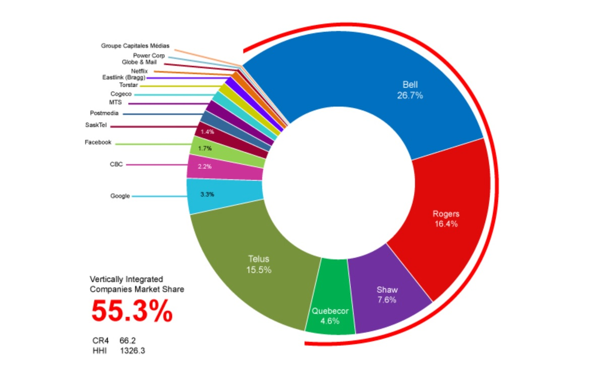

data credit: globalcitizen.org
Concentration of media ownership (also known as media consolidation or media convergence)
is a process whereby progressively fewer individuals or organizations control increasing shares of the mass media.

image credit: human-as-media.com
1190 x 724